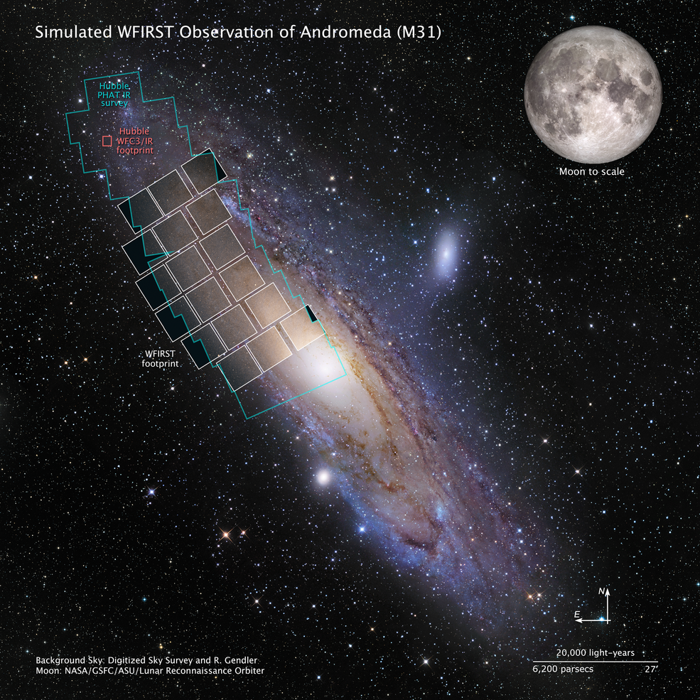

The Nancy Grace Roman Space Telescope, formerly known as the Wide Field Infrared Survey Telescope (WFIRST), is one of NASA's next-generation space observatories. Named in honor of Dr. Nancy Grace Roman, NASA's first Chief Astronomer, this telescope is designed to address some of the most pressing questions in modern astrophysics.
With its primary mission centered around exploring the mysteries of dark energy, dark matter, and exoplanets, the Roman Space Telescope boasts a field of view 100 times greater than the Hubble Space Telescope in the infrared spectrum. This wide field of view will allow it to conduct large-scale surveys of the universe, capturing a more comprehensive picture of cosmic evolution and structure.
Among its many anticipated contributions, the Roman Space Telescope is expected to survey the Milky Way to discover thousands of exoplanets using gravitational microlensing. Additionally, its detailed observations will help refine our understanding of the nature of dark energy and its influence on the expansion of the universe. With an estimated mission cost of over $3 billion, the Roman Space Telescope represents a significant investment in the future of astrophysics. As preparations continue for its launch, the scientific community eagerly awaits the new vistas of the universe that it promises to unveil.
 Next